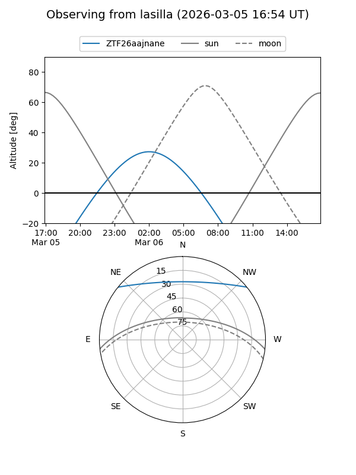
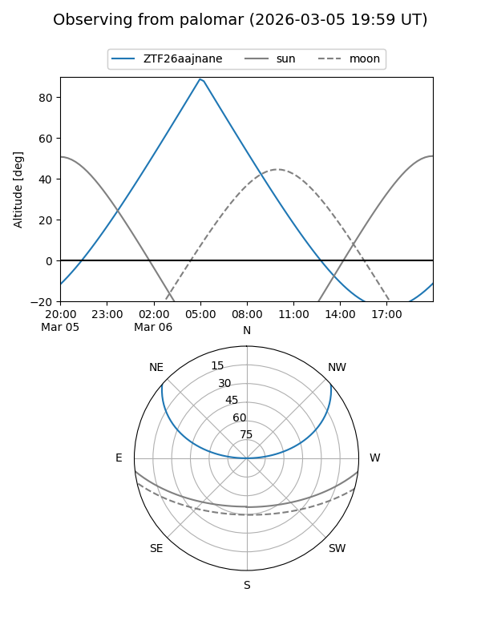

ZTF26aajnane
Target ZTF26aajnane at 2026-03-06 05:49
Aliases and brokers:
FINK: link
Lasair: link
ALeRCE: link
alt names
ZTF26aajnane (ztf,fink_ztf)
Coordinates:
equatorial (ra, dec) = 122.6879,+33.49865
equatorial (HMS+DMS) = 08:10:45.10,+33:29:55.13
galactic (l, b) = (188.1471,+30.22583)
Flags:
Photometry:
last ztfg=19.83
1 ztfg detections
Lightcurve
Visibility


Additional plots